← All work / Project 04
COMSOL Multiphysics · ES 120 + ES 125
Simulation & FEA
Two finite-element studies: checking the assumptions behind tension testing in a steel specimen, and predicting how a vibrating beam resonates.
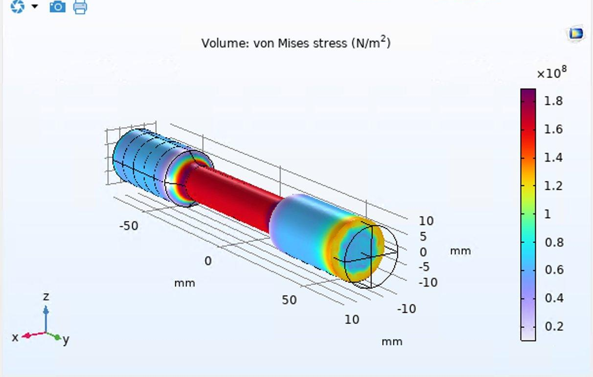
Study 1 / ES 120
Mechanics of Solids
Do the textbook assumptions hold up?
A computational project with Anthony Bynum (April 2026). Hand calculations in solid mechanics lean on two simplifications: linear elasticity, and Saint-Venant's principle, which lets you use σ = F/A no matter how the load is gripped. We tested both on a standard ASTM E8 round tensile specimen in COMSOL.
The specimen uses COMSOL's Structural Steel (E = 200 GPa), with one end fixed and an axial load of 20 kN on the other, solved on a fine mesh. That load gives a nominal gauge stress of 163 MPa.
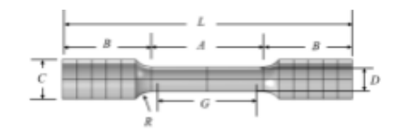
| Dim. | Description | Value |
|---|---|---|
| G | Gauge length | 50 mm |
| D | Gauge diameter | 12.5 mm |
| R | Fillet radius | 10 mm |
| A | Reduced section length | 56 mm |
| C | End diameter | 20 mm |
| L | Overall length | 145 mm |
1A / Linear vs. nonlinear
Is a linear model good enough?
Geometrically nonlinear solves are more accurate for large deformations, but they cost far more computing time. We ran the same model both ways, changing only the geometric-linearity setting, and doubled the load to 40 kN to push stress past the steel's 300 MPa yield strength.
For steel, the stress-strain curves were nearly identical, with a mean absolute difference of 7.74 MPa. To see where the models start to split, we repeated the study in acrylic (64 MPa yield), which reaches strains near 10%. There the nonlinear curve visibly bends away from the linear one, but the two still agreed within 0.8%.
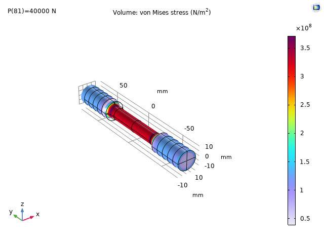
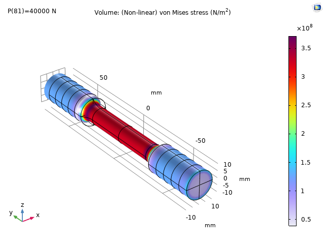
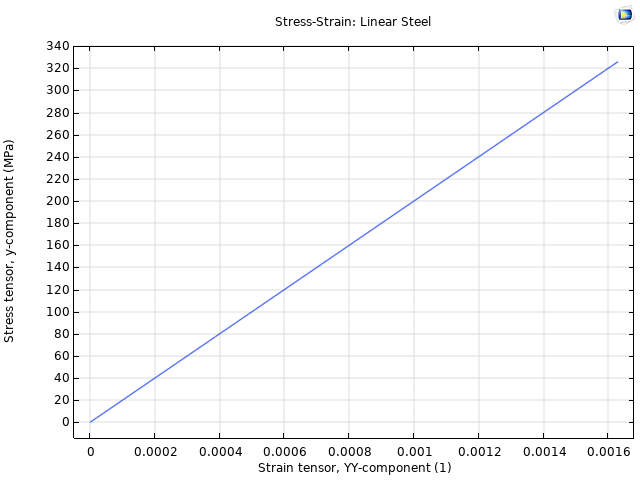
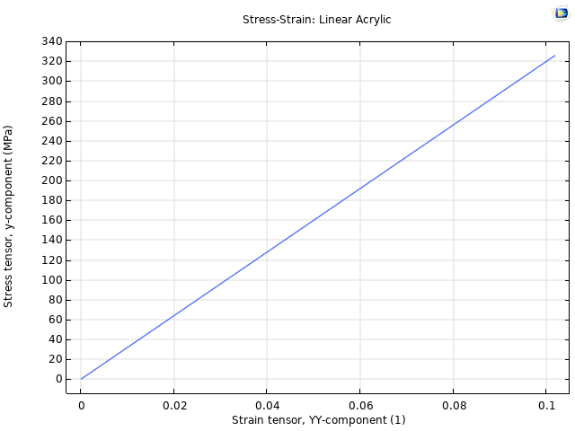
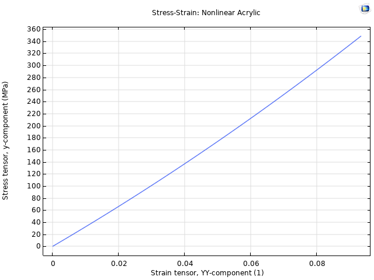
1B / Saint-Venant
Three very different loads, one stress field.
Saint-Venant's principle says loads with the same net force produce the same stress far enough from where they're applied. We put 20 kN on the end face three ways: spread evenly, as a single point at the center, and as a ring on the outer edge (r = 7–10 mm) that mimics a hollow grip. Then we measured the axial stress across seven cross-sections in the gauge section.
The point load creates a local spike of about 12 GPa at the face, yet all three cases settle to 163 ± 2 MPa with less than 2% variation within about four diameters. The uniform and point loads match to within 0.01%. That justifies using σ = F/A as the design stress in tension testing, whatever the grip.

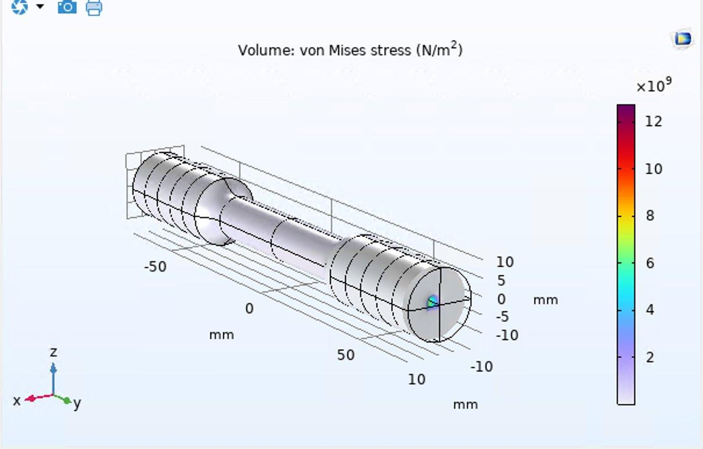
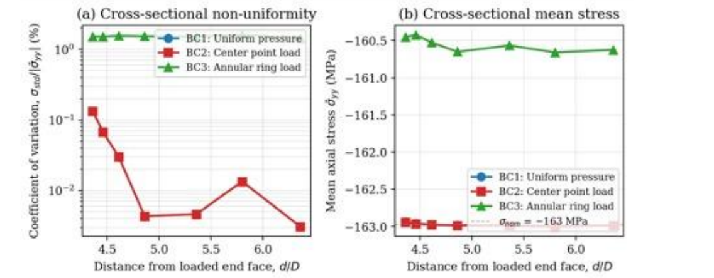
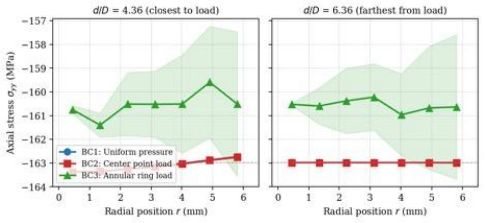
| d/D | y (mm) | BC 1 (MPa) | BC 1 CoV | BC 2 (MPa) | BC 2 CoV | BC 3 (MPa) | BC 3 CoV |
|---|---|---|---|---|---|---|---|
| 4.36 | 18.00 | 162.94 | 0.133% | 162.94 | 0.133% | 160.45 | 1.512% |
| 4.46 | 16.75 | 162.96 | 0.067% | 162.96 | 0.067% | 160.42 | 1.511% |
| 4.61 | 14.88 | 162.97 | 0.030% | 162.98 | 0.030% | 160.53 | 1.554% |
| 4.86 | 11.75 | 162.98 | 0.004% | 162.98 | 0.004% | 160.65 | 1.527% |
| 5.36 | 5.50 | 162.99 | 0.005% | 162.99 | 0.005% | 160.57 | 1.512% |
| 5.80 | 0.00 | 163.00 | 0.013% | 163.00 | 0.013% | 160.66 | 1.603% |
| 6.36 | −7.00 | 162.98 | 0.003% | 162.98 | 0.003% | 160.63 | 1.436% |
Study 2 / ES 125
Mechanical Systems
Predicting where a beam resonates.
In this COMSOL lab we modeled the thin aluminum beam from our vibration experiments and solved for its first six natural frequencies. The first model came out stiffer than the real beam, because it left out the mass loaded onto the bar in the experiment. Adding that mass brought the first mode down from 7.71 Hz to 1.25 Hz, much closer to what we measured.
The trend follows beam theory, ωn = β2√(EI / ρA). More mass per length lowers every mode. A thicker beam raises I, and the frequencies go up with it: doubling the thickness to 2 mm took mode 1 from 1.25 to 5.89 Hz.
| Configuration | Mode 1 | Mode 2 | Mode 3 | Mode 4 | Mode 5 | Mode 6 |
|---|---|---|---|---|---|---|
| Aluminum, 1 mm, no added mass | 7.71 | 48.29 | 135.42 | 145.59 | 266.14 | 302.90 |
| Aluminum, 1 mm, with added mass | 1.25 | 29.95 | 34.02 | 49.36 | 109.87 | 229.40 |
| Aluminum, 2 mm | 5.89 | 81.51 | 98.19 | 137.98 | 314.33 | 654.12 |
| Steel, 1 mm | 3.46 | 49.00 | 82.61 | 95.86 | 156.21 | 325.03 |
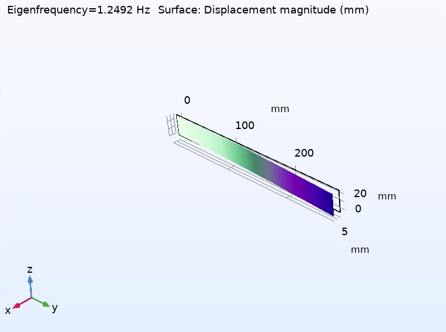
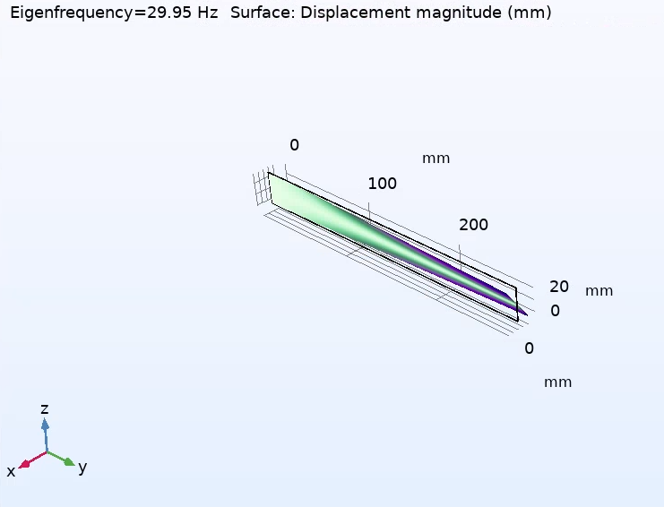
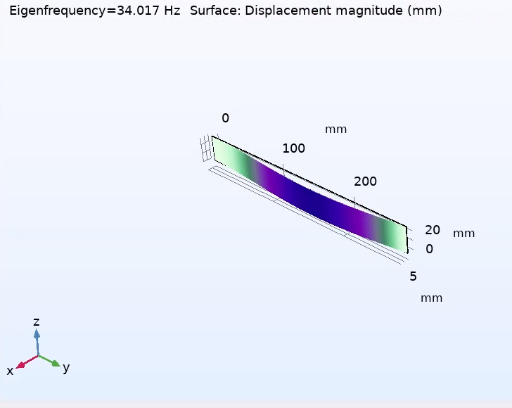
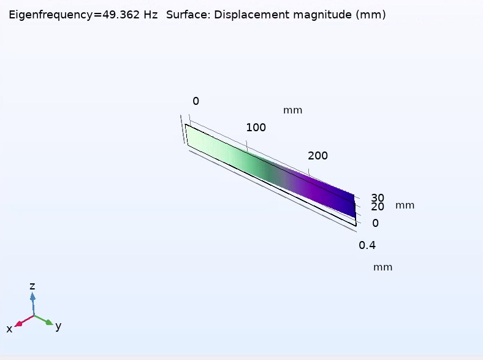
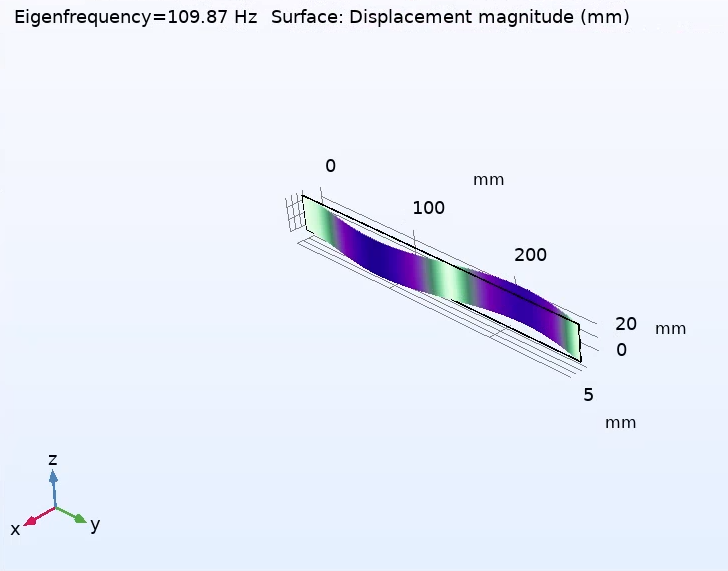
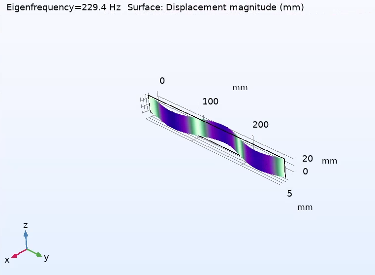
2B / Frequency response
The peaks land on the predicted modes.
A frequency sweep of the driven beam shows a sharp peak near the first mode and another between 30 and 40 Hz, right where modes 2 and 3 sit (29.95 and 34.02 Hz). When the driving frequency matches a natural frequency, the beam resonates and its motion grows sharply.
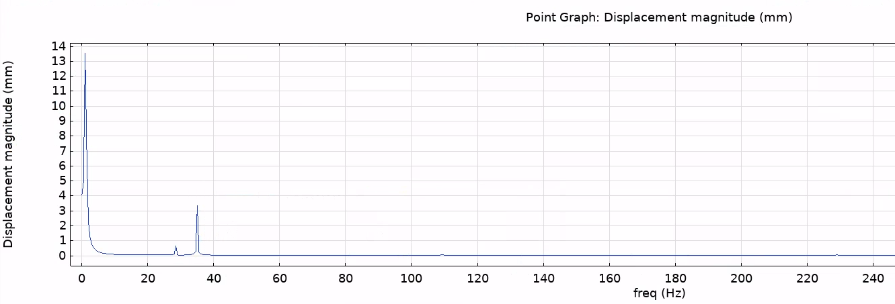